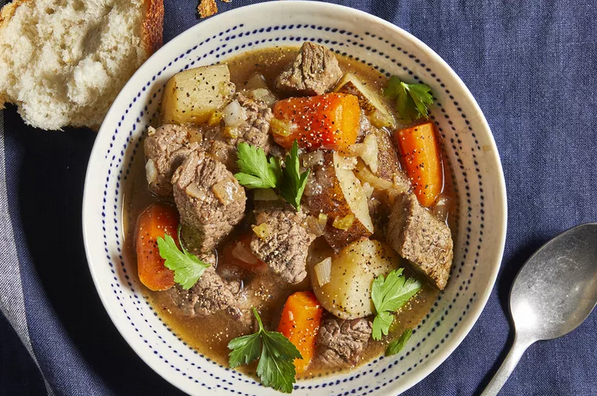

Slower Cooked Beef Stew

Description
This slow cooker beef stew is the perfect low maintenance meal for chilly fall and winter nights. Full of cozy flavor
and hearty ingredients, this beef stew recipe will warm you up from the inside out.
Ingredients
- Stew meat
- Flour
- Seasonings
- Broth
- Vegetables
Steps
- Combine ingredients: Place the beef in the slow cooker, then toss with flour, salt, and pepper. Add the broth,
vegetables, Worcestershire sauce, paprika, garlic, and bay leaf. Stir to combine.
- Set slow cooker: Cover the Crock-Pot and cook on Low for 8 to 12 hours or on High for 4 to 6 hours.